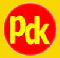

The KDP's emblem consists of two circles, an outer circle and inner circle enclosing a shining sun with forty six beams symbolizing the year 1946, the year in which the party was formed. In the middle of the sun's disk, an eagle stands with his head held high. At the top, in between the inner and outer circles, the party's name is calligraphcally inscribed. Beneath the eagle, the initials of the party (KDP) are printed representing the Kurdistan Democratic Party. Within the outer and inner circles, two grain spikes are crossing each other at the bottom where the year 1946 is imprinted. Below the sun, in between the gap of the inner circle, the inscription of the party's name in Latin (PARTIYA DEMOKRATA KURDISTANE) are printed. The emblem is based upon a white background, signifying the elements of purity, peace, freedom and cooperation. THE EMBLEM's COLORS AND SYMBOLS
(1) The outer circle (red) symbolizes the blood of Kurdish martyrs and the continued struggle for Kurdish freedom and dignity.
(2) The inner circle (green) expresses the beauty and the landscapes of Kurdistan.
(3) The sun ( yellow) represents the source of life and light of the people.
(4) The Eagle symbolizes freedom, nobility of character, pride, patience and forbearance.
(5) The grain spikes represent the agriculture of Kurdistan, or the rich resources of the land.
Generally, the emblem's colors express the colors of the sacred Kurdish flag.
THE PARTY's BANNER
Designer: Hussain Haider

The Party's banner basically consists of the letters (PdK), the party's initials in Latin (PARTIYA DEMOKRATA KURDISTANE), with the colors yellow and red drawn upon a circular shield. The following descriptions explain the significant features of the banner.
THE COLORS YELLOW: symbolizes the light of the sun, the source of life,
warm and energy, and was the colors of the party since its formation.
The Red color: symbolizes the blood of the Kurdistan's Martyrs.
THE LETTERS ((PdK):
The purpose of designing the letter (d) in small letter rather than in capital letter is to portray a visual compatibility between the letters (P) and (K) and more significantly to interlock the letter -P- (PARTIYA) and letter -d- (DEMOKRATA ) in such a way that they are one and the same, or a mirror image of one another. Furthermore, to establish an organic relationship between the words (DEMOKRATA) and (KURDISTANE), making them inseparable both in form and content, the two letters d&K are made to share the same vertical stroke.
THE SHIELD:
Symbolizing both fortitude and the mountains of Kurdistan, the ”shields” have saved the Kurdish nation from extinction throughout its rankled history
Kurdistan Democratic Party - Iraq
Information Office-Internet
Information officer Alex Atroushi
Tel: + 46 70 790 40 97 + 46 73 509 40 97 Sweden
Fax: + 44 20 818 16 293 UK

{kind=link}